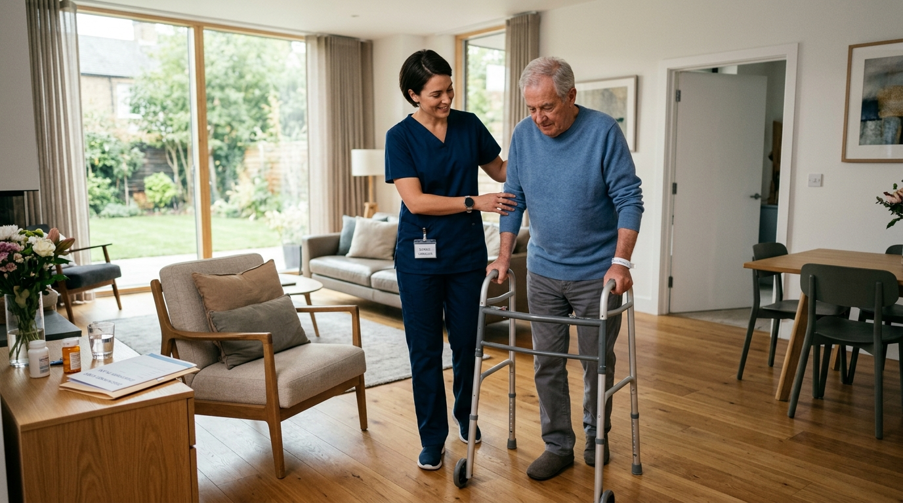
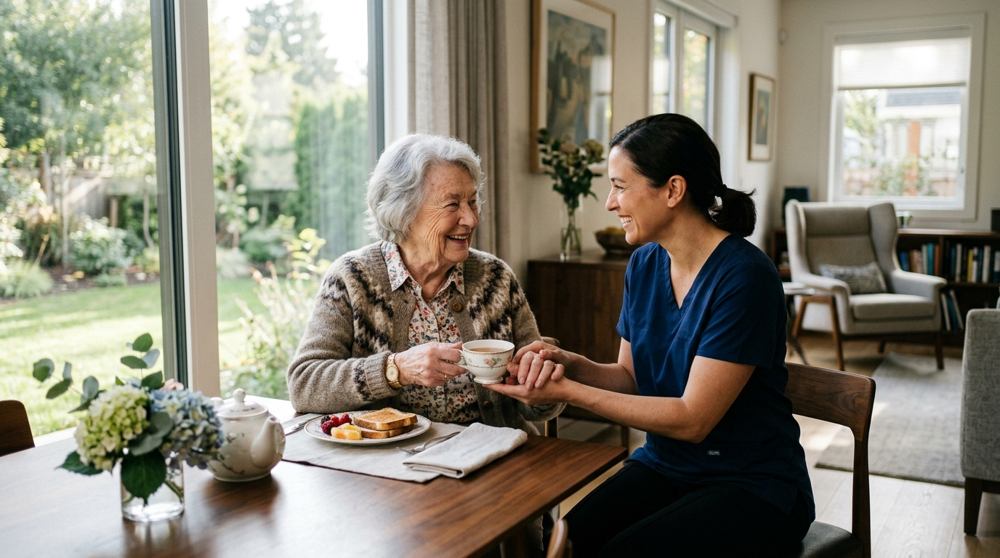

Guide
Choosing a Caregiver
How to identify the right support for your loved one. Key questions to ask and what to look for beyond basic qualifications.
Read ArticleHelpful guidance, thoughtful insights, and practical advice for families navigating caregiving decisions.
How to identify the right support for your loved one. Key questions to ask and what to look for beyond basic qualifications.
Read Article
Simple everyday considerations and modifications that can significantly reduce the risk of falls and accidents for older adults living independently.
Read Article
Helping loved ones maintain confidence and routine. Strategies for offering assistance that empowers rather than diminishes.
Read ArticleHow to talk with parents about receiving help at home without compromising their sense of independence and dignity.
Read ArticleWhy family caregivers need support too. Recognizing burnout and understanding how temporary professional care can improve everyone's wellbeing.
Read ArticleQuestions families should consider when outlining long-term care needs, schedules, and financial arrangements.
Read ArticleNavigating care options can be overwhelming. We've compiled the most common questions families ask us when starting their caregiving journey to provide you with immediate clarity.
Ask a Custom QuestionEnter your email to receive our comprehensive family care guide directly in your inbox.